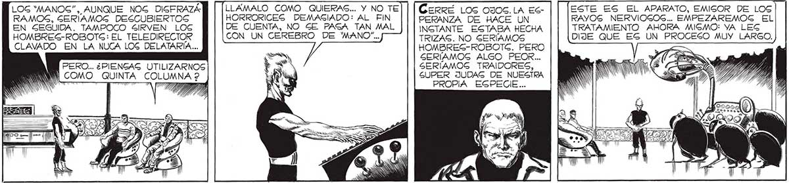

162 EN y Y € ES úl QUE LES HARAN PENGAR EXACTAMENTE COMO NOGOTROSG, LOG "MANOS"... ES UN TRATAMIENTO LARGO Y DIFÍCIL... / 3 LOG “MANOG”, AUNQUE NOG DIGFRAZÁ RAMOS, GERÍAMOS DESCUBIERTOS EN SEGUIDA. TAMPOCO SIRVEN LOG HOMBREG-ROBOTG: EL TELEDIRECTOR CLAVADO EN LA NUCA LOS DELATARÍA... PERO... ¿PIENGAG UTILIZARNOS WNWW.COMO QUINTA COLUMNA 2 FUE DIFÍCIL CAPTURARLOGS A USTEDES... ) CON ELLO DEMOGTRARON CONDICIONEG DE EXCEPCIÓN :JUSTAMENTE LO QUE YO ESTABA BUGCANDO DESDE QUE EMPEZAMOS A HACER PRIGIONEROS... QUE LES CAMBIARAN LA (174/77 , ESTRUCTURA CEREBRAL... DP SERÍA UNA PENA DES PERDICIAR HOMBRES COMO UGTEDES, CONVIRTIÉNDOLOS EN HOMBREG-ROBOTS, QUE APENAG Gl SIRVEN PARA ALGO MÁS QUE LOS FP "CAGCARUDOG”. ..CUYA APLICACION SOLO GE JUSTIFICA CON HOMBRES DE EXCEPCION A xa ee LLAMALO COMO QUIERAS... Y NO TE HORRORICEGS DEMASIADO: AL FIN DE CUENTA, NO SE PASA TAN MAL CON UN CEREBRO DE "MANO... COMO UCTEDES... Mk Y) / Y e y TIRA | INN E UL ¿PARA QUE TOMARTE TANTO TRABAJO? ¿NO GON ACASO BASTANTES USTEA DES LOG MANOS? CeRrRÉ LOS OJOS.LA ESPERANZA DE HACE UN INGTANTE ESTABA HECHA TRIZAS. NO SERÍAMOS HOMBRES-ROBOTG. PERO SERÍAMOG ALGO PEOR... SERÍAMOS TRAIDORES, SUPER JUDAG DE NUESTRA PROPIA ESPECIE... 'NO ENTIENDO... ¿QUE DE UN ORDEN £UPERIOR..LOSG PIENSAS SOMETERE A UN TRATAMIENTO DE RAYOS NERVIOSOS... HACERNOS? Ni SÍ, SOMOS BAGTANTES.. PERO NINGUNO DE LOS NUESTROS PODRIA ENTRAR AL ESTADIO DONDE ESTÁN ATRINCHERADOG LOG DEFENCORES Y CONVENCERLOS DE QUE DEBEN CESAR LA RESISTENCIA, DE QUE DEBEN R HARÉ DE UGTEDES “ROBOTS” N ES y 1 ENDIRSE... Sa ESTE ES EL APARATO, EMISOR DE LOS RAYOS NERVIOGOS... EMPEZAREMOSG EL TRATAMIENTO AHORA MIGMO: VA LEG DIJE QUE ES UN PROCESO MUY LARGO.
